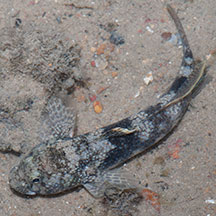
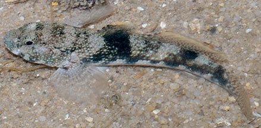
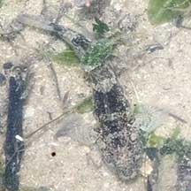

|
|
| fishes text index | photo index |
| Phylum Chordata > Subphylum Vertebrate > fishes > Family Gobiidae |
| Frill-fin
goby Bathygobius sp. Family Gobiidae updated Sep 2020 Where seen? This pretty spotted goby is commonly seen on many of our shores, in rocky shores, coral rubble and reefs. Features: 4-7cm long. It has bulging cheeks and a pattern of tiny white spots regularly spaced on its face and in rows down its body. Usually a pair of dark saddles, as well as dark blotches, along the body length. The most commonly seen frill-fin gobies on our shores are the Common frill-fin goby (Bathygobius fuscus) and Meggitt's frill-fin goby (Bathygobius meggitti) which look very similar. |
 Pulau Hantu, Jun 09 |
 Tiny white dots regularly spaced on face and in rows on its body. St. John's Island, Sep 07 |
| Frill-fin gobies on Singapore shores |
On wildsingapore
flickr
|
| Other sightings on Singapore shores |
 East Coast NSRCC, Nov 20 Photo shared by James Koh on flickr. |
| Acknowledgements Thanks to Dr Zeehan Jaafar for identifying some of these fishes. Links
References
|